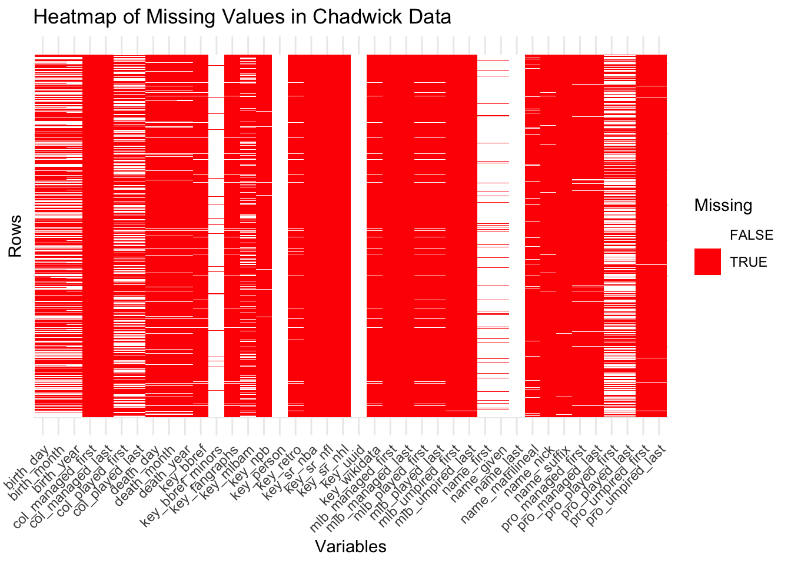
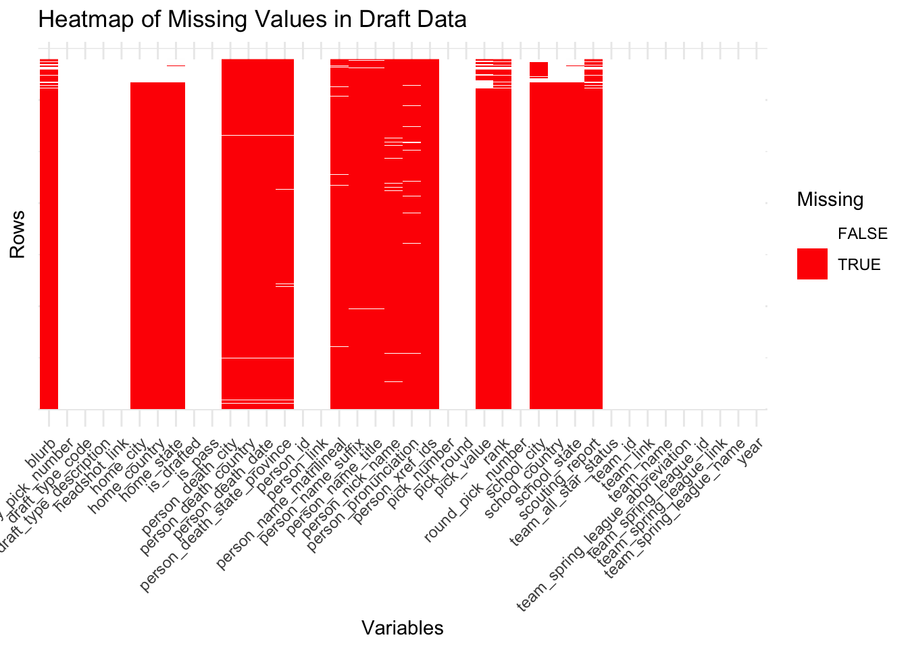
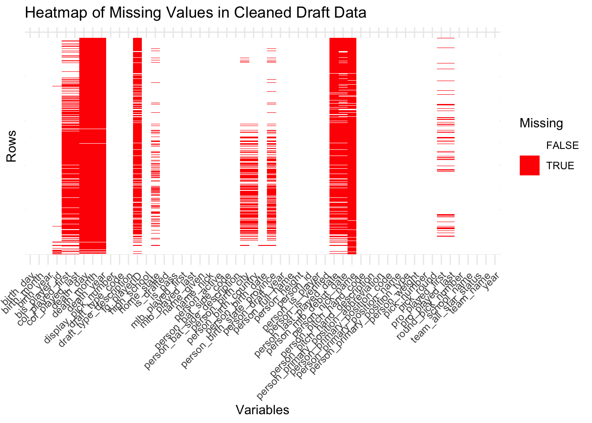
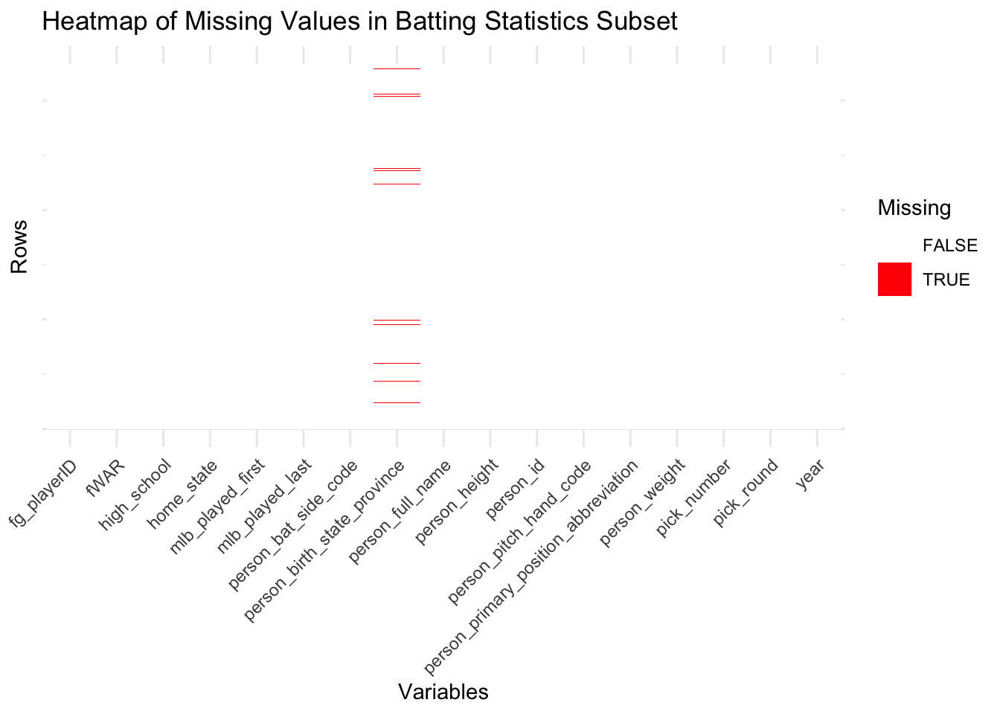
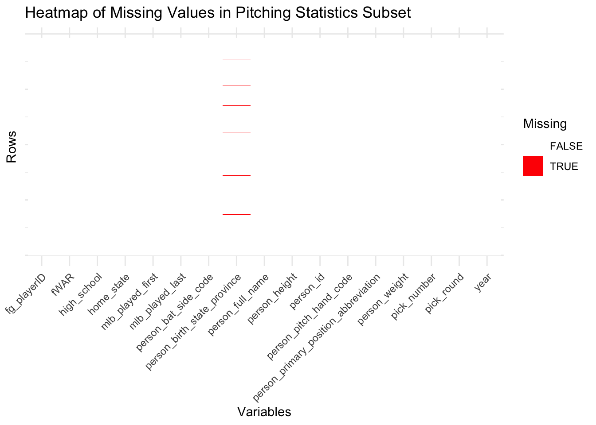
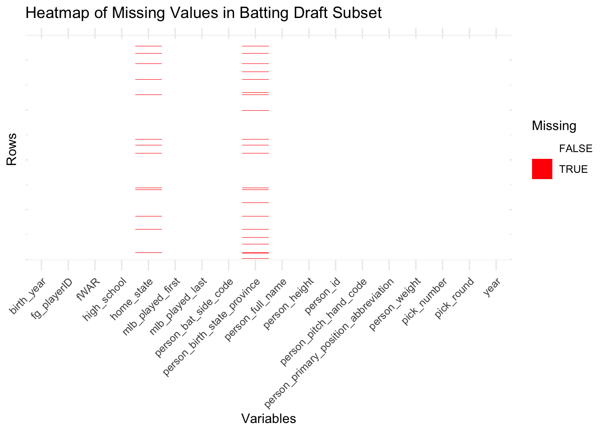
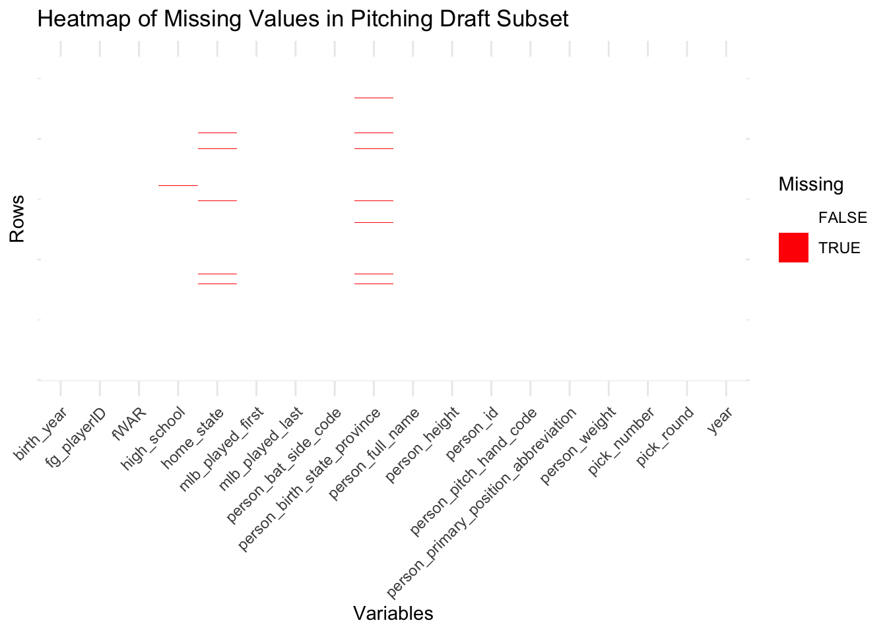

Code
library(tidyverse)
library(baseballr)
library(ggplot2)For this project, there are four key data sources that will be utilized.
The first two datasets are obtained using the pybaseball package, a Python library (last updated on September 8, 2023 with updates every 1-2 months on average) that provides access to various reputable baseball sources such as FanGraphs and Baseball Reference. By utilizing pybaseball’s implemented batting_stats() and pitching_stats() functions, we get the batting data and pitching statistics for MLB players, saved as “batting_stats.csv” and “pitching_stats.csv”, respectively. The batting statistics dataset has dimensions of 10,665 × 319, and the pitching statistics dataset has the dimensions of 6,423 × 392.
The last two datasets are sourced from BaseballR package, an R library (last updated on January 16, 2024 with updates every 2-3 months on average) designed for accessing and analyzing baseball data from other reputable sources such as Statcast (an analytics system used by the MLB to track baseball data) and Baseball Savant. Using the BaseballR package, we retrieve baseball draft data for each year from 1965 to 2023, which includes details about player drafts such as team, round, and selection year, saved as “draft_df.csv”. Additionally, we run the chadwick_player_lu() function from BaseballR to get a database of player biographical and career information from the Chadwick Baseball Bureau, which we save as “chadwick_data.csv”. The draft dataset has dimensions of 67,903 x 84 and the Chadwick player dataset has dimensions of 512,843 x 40.
The main issues/problems with the data is that there are missing values present, and an in-depth analysis about this will be provided in the missing value analysis section below.
Within our data, we see many missing values from each of our data sets.
library(tidyverse)
library(baseballr)
library(ggplot2)Within our batting statistics dataset, there are a large amount of missing values, where even some variables have the same amount of missing values as there are rows in the dataset. For variables that have this situation, it is due to that feature not being applicable for batters. For example, a variable tracking a specific pitch type (like UN% or FT%) will not have data since the data primarily focuses on batting. There are some variables that contain some missing values, which may be due to data collection gaps or data source limitation. Other common statistics though, such as AB (At Bats), H (Hits), and RBI (Runs Batted In), are core metrics in baseball datasets and are therefore recorded in our dataset without missing values. Due to the large nature of this dataset where there are 319 variables, a summary of missing values is included instead of a heatmap visually showing the missing values of each variable at each column. A count of how many columns contain missing values and how many do not is also shown for greater clarification on the significant amount of missing variables.
batting_stats <- read_csv("data/original/batting_stats.csv", show_col_types = FALSE)
batting_na_count = colSums(is.na(batting_stats)) |>
sort(decreasing = TRUE)
batting_na_count[batting_na_count == 10665] FT% (sc) UN% (sc) vFT (sc) FT-X (sc) FT-Z (sc) wFT (sc) wFT/C (sc)
10665 10665 10665 10665 10665 10665 10665
xBA xSLG xwOBA
10665 10665 10665 batting_na_count[batting_na_count == 0] IDfg Name Team Age G AB PA H 1B 2B
0 0 0 0 0 0 0 0 0 0
3B HR R RBI BB IBB SO HBP SF SH
0 0 0 0 0 0 0 0 0 0
GDP SB CS AVG BB% K% BB/K OBP SLG OPS
0 0 0 0 0 0 0 0 0 0
ISO BABIP wOBA wRAA wRC Bat Rep Pos RAR WAR
0 0 0 0 0 0 0 0 0 0
Spd BsR Def wSB Age Rng Off Lg Events L-WAR
0 0 0 0 0 0 0 0 0 columns_with_na_batting <- sum(colSums(is.na(batting_stats)) > 0)
columns_without_na_batting <- sum(colSums(is.na(batting_stats)) == 0)
cat("Batting Columns with NA values:", columns_with_na_batting, "\n")Batting Columns with NA values: 270 cat("Batting Columns without NA values:", columns_without_na_batting, "\n")Batting Columns without NA values: 49 Within our pitching statistics dataset, there are also a large amount of missing values, though there are not as many variables nor observations as that of the batting dataset. Again, some variables in this dataset have the same amount of missing values as there are rows in the dataset. For variables that have this situation, it is due to that feature not being applicable for pitchers. For example, a variable tracking advanced metrics such as Stf+ FO (Stuff+ for Four-Seam Fastballs) or Loc+ FO (Location+ for Four-Seam Fastballs) will not have data since these variables require specific conditions or a sufficient sample size of pitches to calculate, making them inapplicable to all pitchers. There are some variables that contain some missing values, which may be due to data collection gaps or data source limitations. Other common statistics, such as W (Wins), L (Losses), and ERA (Earned Run Average), are core metrics in baseball datasets and are therefore recorded in our dataset without missing values. Due to the large nature of this dataset where there are 392 variables, a summary of missing values is included instead of a heatmap visually showing the missing values of each variable. A count of how many columns contain missing values and how many do not is also shown for greater clarification on the significant amount of missing variables.
pitching_stats <- read_csv("data/original/pitching_stats.csv", show_col_types = FALSE)
pitching_na_count = colSums(is.na(pitching_stats)) |>
sort(decreasing = TRUE)
pitching_na_count[pitching_na_count == 6423] FT% (sc) FO% (sc) UN% (sc) vFT (sc) vFO (sc) FT-X (sc) FO-X (sc)
6423 6423 6423 6423 6423 6423 6423
FT-Z (sc) FO-Z (sc) wFT (sc) wFO (sc) wFT/C (sc) wFO/C (sc) xERA
6423 6423 6423 6423 6423 6423 6423
Stf+ FO Loc+ FO Pit+ FO
6423 6423 6423 pitching_na_count[pitching_na_count == 0] IDfg Name Team Age W L ERA WAR
0 0 0 0 0 0 0 0
G GS CG ShO SV IP TBF H
0 0 0 0 0 0 0 0
R ER HR BB IBB HBP WP BK
0 0 0 0 0 0 0 0
SO K/9 BB/9 K/BB H/9 HR/9 AVG WHIP
0 0 0 0 0 0 0 0
BABIP LOB% FIP RAR ERA- FIP- K% BB%
0 0 0 0 0 0 0 0
E-F RA9-WAR BIP-Wins LOB-Wins FDP-Wins Age Rng K-BB% Events
0 0 0 0 0 0 0 0 columns_with_na_pitching <- sum(colSums(is.na(pitching_stats)) > 0)
columns_without_na_pitching <- sum(colSums(is.na(pitching_stats)) == 0)
cat("Pitching Columns with NA values:", columns_with_na_pitching, "\n")Pitching Columns with NA values: 344 cat("Pitching Columns without NA values:", columns_without_na_pitching, "\n")Pitching Columns without NA values: 48 Missing values are also present within the Chadwick data, which contains the biographical and career information of people associated with the MLB. Some columns are seen to be entirely missing given that they are shown as solid red bars, which suggests that these variables are either not relevant to the dataset’s context or represent data that was not collected. Other columns have a mix of missing and non-missing values, which means that these variables may suffer from data collection gaps or were conditionally applicable, such as metrics that may applicable to baseball managers or metrics that were unavailable for certain time periods. Lastly, columns with no missing values as seen with white bars represent essential metrics such as a person’s name and position in the MLB. These metrics are recorded across the Chadwick dataset which shows that despite the dataset having missing data present, its key metrics still are reliably available for analysis.
chadwick_data <- read_csv("data/original/chadwick_data.csv", show_col_types = FALSE)
chadwick_data_uniform <- chadwick_data |>
mutate(across(everything(), as.character))
missing_chadwick <- chadwick_data_uniform |>
mutate(row_id = row_number()) |>
pivot_longer(-row_id, names_to = "variable", values_to = "value") |>
mutate(missing = is.na(value))
ggplot(missing_chadwick, aes(x = variable, y = row_id, fill = missing)) +
geom_tile() +
scale_fill_manual(values = c("FALSE" = "white", "TRUE" = "red"), name = "Missing") +
theme_minimal() +
labs(
title = "Heatmap of Missing Values in Chadwick Data",
x = "Variables",
y = "Rows"
) +
theme(
axis.text.x = element_text(angle = 45, hjust = 1),
axis.text.y = element_blank()
)
Lastly, missing values were also present within the draft data containing the team, round, and selection year of a player. To visualize the missing values in this dataset, I selected the top 20 variables with the most missing values and the top 20 with the least missing values. This was done due to there being a large amount of variables present in the dataset, though it was not as extensive as those in the batting and pitching datasets. Some columns are seen to be entirely missing given that they are shown as solid red bars, which suggests that they might not be applicable to the dataset’s context, such as fields related to specific player demographics or draft-related outcomes that were not recorded. Other columns have a mix of missing and non-missing values, which means that these variables may suffer from data collection gaps or were attributes relevant only to certain players, teams, or draft rounds. Lastly, columns with no missing values as seen with white bars represent essential metrics such as a player’s name, their draft pick numbers, or other key metrics that are consistently recorded. These metrics are recorded throughout the draft dataset, which still demonstrates that while missing data is also present in this dataset, the key metrics in this dataset also still remain reliably available for analysis.
draft_data <- read_csv("data/original/draft_data.csv", show_col_types = FALSE)
top_missing_vars_draft <- draft_data |>
summarise(across(everything(), ~ sum(is.na(.)))) |>
pivot_longer(everything(), names_to = "variable", values_to = "missing_count") |>
arrange(desc(missing_count)) |>
slice(1:20) |>
pull(variable)
least_missing_vars_draft<- draft_data |>
summarise(across(everything(), ~ sum(is.na(.)))) |>
pivot_longer(everything(), names_to = "variable", values_to = "missing_count") |>
arrange(missing_count) |>
slice(1:20) |>
pull(variable)
draft_subset <- draft_data |>
select(all_of(c(top_missing_vars_draft, least_missing_vars_draft)))
draft_data_uniform <- draft_subset |>
mutate(across(everything(), as.character))
missing_draft <- draft_data_uniform |>
mutate(row_id = row_number()) |>
pivot_longer(-row_id, names_to = "variable", values_to = "value") |>
mutate(missing = is.na(value))
ggplot(missing_draft, aes(x = variable, y = row_id, fill = missing)) +
geom_tile() +
scale_fill_manual(values = c("FALSE" = "white", "TRUE" = "red"), name = "Missing") +
theme_minimal() +
labs(
title = "Heatmap of Missing Values in Draft Data",
x = "Variables",
y = "Rows"
) +
theme(
axis.text.x = element_text(angle = 45, hjust = 1),
axis.text.y = element_blank()
)
To address the missing values in our datasets, we have performed data cleaning. By combining the draft data and the Chadwick data, we now have a comprehensive dataset that includes a player’s draft information as well as their biological and career details. Unnecessary variables have been removed to reduce the overall presence of missing values, while retaining valuable information such as a player’s draft round and height. Consistency has been ensured in both datasets regarding the formatting of variables like height and place of origin, facilitating a smooth merging process. New columns were created to represent the year of a player’s MLB debut and the year they last played, player height was converted into total inches, and state abbreviations in school names were extracted and corrected.
library(data.table)
library(datasets) # for state abbreviations
draft_info <- fread('data/original/draft_data.csv')
draft_info <-
draft_info |>
# Add year columns to match up with Chadwick
mutate(mlb_played_first = year(person_mlb_debut_date),
high_school = ifelse(str_detect(school_name, "\\sHS") == TRUE, "Yes",
"No"),
person_height = str_replace_all(person_height, "\"$", "")) |>
replace_na(list(home_state = "None", mlb_played_first = 0)) |>
mutate(mlb_played_last = ifelse(mlb_played_first == 0, 0,
year(person_last_played_date))) |>
replace_na(list(mlb_played_last = 2023)) |>
# Remove variables of no interest
select(-person_link, -c(person_use_name:person_gender),
-c(person_name_slug:person_init_last_name),
-c(person_name_matrilineal:home_city), -c(home_country, school_state),
-c(person_xref_ids:person_death_country), -person_name_title, -team_id,
-person_name_suffix, -c(team_link:team_spring_league_abbreviation),
-headshot_link, home_state)
chadwick <- fread('data/original/chadwick_data.csv')
# Update Chadwick for players who were drafted after
chadwick <-
chadwick |>
select(-c(pro_managed_first:mlb_umpired_last), -name_suffix,
-name_matrilineal, -key_person, -key_uuid, -key_retro,
-key_bbref_minors, -c(key_npb:key_wikidata), -key_bbref) |>
# Add variables to match up with Draft info
mutate(person_birth_date =
str_c(birth_year, birth_month, birth_day,
sep="-"),
person_full_fml_name =
str_c(name_given, name_last, sep = " "),
person_full_name =
str_c(name_first, name_last, sep = " ")) |>
rename(person_id = key_mlbam,
fg_playerID = key_fangraphs) |>
arrange(mlb_played_first) |>
drop_na(person_id)
# missing height is formatted as 0' 0"
missing_height <- draft_info$person_height[57]
draft_info <-
draft_info |>
# add the chadwick player info
inner_join(chadwick |>
select(-person_full_name, -person_birth_date, -person_full_fml_name,
-mlb_played_first, -mlb_played_last),
by = "person_id") |>
# Remove unnecessary variables
select(-person_first_name, -person_last_name, -person_primary_number,
-person_current_age, -c(person_name_first_last:person_strike_zone_bottom),
person_primary_position_code, person_primary_position_type,
person_bat_side_description, person_pitch_hand_description, -name_last,
-name_first) |>
filter(person_height != missing_height)
rm(chadwick)
# Get the indices for the elements which contain a state abbreviation
draft_index <- which(str_detect(draft_info$school_name, pattern = "\\((.*?)\\)"))
draft_list <- str_match_all(draft_info$school_name, pattern = "\\((.*?)\\)")
# Extracts the text within the "()", and stores it as a vector
draft_states <- unlist(lapply(draft_list, function(x) {x[, 2]}))
rm(draft_list)
draft_states <- draft_states[!is.na(draft_states)]
# Get the index for the draft_stats which contain the pattern ", "
comma_index <- which(str_detect(draft_states, ",\\s"))
comma_states <- draft_states[comma_index]
wrong <- comma_states[which(!str_detect(comma_states, ", ([:alpha:]+)"))]
comma_states[which(!str_detect(comma_states, ", ([:alpha:]+)"))] <- ", FL"
comma_states <-
str_match_all(comma_states, ", ([:alpha:]+)") |>
lapply(function(x) {x[, 2]})
comma_states[[2525]] <- comma_states[[2525]][2]
comma_states <- comma_states |> unlist()
draft_states[comma_index] <- comma_states
draft_info <- draft_info |> mutate(home_state = person_birth_state_province)
draft_info$home_state[draft_index] <- draft_states
rm(draft_index, draft_states, wrong)
# Wrong abbreviations indices
wrong_index <- which(nchar(draft_info$home_state) > 2)
wrong_abbrev <- draft_info$home_state[wrong_index]
state_data <- data.frame(state_name = state.name, state_abb = state.abb)
state_names_wrong <-
data.frame(state_name = wrong_abbrev[which(tolower(wrong_abbrev) %in% tolower(state.name))]) |>
inner_join(state_data, by = "state_name")
wrong_abbrev[which(tolower(wrong_abbrev) %in% tolower(state.name))] <- state_names_wrong$state_abb
# For those players who didn't go to high school
no_hs <- draft_info |>
slice(wrong_index) |>
filter(high_school == "No")
# Improperly formatted states
wrong_states <-
wrong_abbrev[which(!(tolower(wrong_abbrev) %in% tolower(no_hs$home_state)))]
wrong <- unique(wrong_states) |> sort()
correct_states <- c("FL", "AL", "ALB", "AZ", "AZ", "AR", "GA", "MD", "MI", "AL",
"CA", "CA", "CA", "CA", "Canada", "Canada", "IL",
"Christian Brothers", "OH", "OH", "Coahuila", "CO", "CT", "CA", "CA",
"DE", "CO", "FL", "FL", "FL", "FL", "FL", "CA", "HI", "Holland", "FL",
"HI", "TX", "IA", "IL", "IL", "IL", "IL", "IN", "IN", "IA",
"KS", "CA", "LA", "IA", "MA", "FL", "FL", "MI", "MI",
"MI", "MN", "MS", "CA", "NC", "NE", "NJ", "NJ", "NY",
"NY", "OH", "OK", "OK", "OK", "OR", "PA", "PA", "PA", "PA",
"PA", "CA", "PA", "PA", "QUE", "QUE", "S. Australia",
"TX", "CA", "CA", "SASK", "St Thomas", "CA", "TN", "TX",
"Trabuco Hills", "Trinity International", "TX", "TX",
"US Virgin Islands", "Ven", "WA", "OH", "WV", "Zacatecas")
corrections <- data.frame(wrong = wrong, correct = correct_states)
wrong_states <- ifelse(wrong_states %in% corrections$wrong, corrections$correct, wrong_states)
wrong_abbrev[which(!(tolower(wrong_abbrev) %in% tolower(no_hs$home_state)))] <- wrong_states
correct_abbrev <- ifelse(wrong_abbrev %in% corrections$wrong, corrections$correct, wrong_abbrev)
draft_info$home_state[wrong_index] <- correct_abbrev
draft_info$home_state <- tolower(draft_info$home_state)
height_list <- str_match_all(draft_info$person_height, "\\d+")
# Convert the first element from feet to inches
height_ft <- as.integer(unlist(lapply(height_list, function(x) {x[1]}))) * 12
height_in <- as.integer(unlist(lapply(height_list, function(x) {x[2]}))) + as.integer(height_ft)
rm(height_list, height_ft)
draft_info$person_height <- height_in
rm(comma_index, comma_states, correct_abbrev, correct_states, height_in,
missing_height, wrong, wrong_abbrev, wrong_index, wrong_states, state_data,
state_names_wrong, no_hs, corrections)
# write_csv(draft_info, 'clean_draft.csv')Upon analyzing the cleaned draft data, some variables, such as a player’s death date and nickname, still contain missing values. This is expected, as many players are still alive and may not have nicknames. However, columns containing essential information, such as a player’s draft pick details and biological attributes, are complete, reflecting data that is uniformly available for all baseball draftees. Overall, the cleaned dataset includes 26 variables with at least one missing value and 27 variables without any missing values. This represents a significant improvement compared to the initial analysis of the draft and Chadwick datasets.
cleaned_draft_na_count <- colSums(is.na(draft_info)) |>
sort(decreasing = TRUE)
cleaned_draft_na_count[cleaned_draft_na_count > 30000] death_day death_year death_month
47979 47978 47978
person_nick_name person_last_played_date fg_playerID
46823 40962 38857
person_mlb_debut_date col_played_first col_played_last
38656 31351 31351 cleaned_draft_na_count[cleaned_draft_na_count == 0][0:10] pick_round pick_number display_pick_number round_pick_number
0 0 0 0
is_drafted is_pass year person_id
0 0 0 0
person_full_name person_height
0 0 columns_with_na_draft <- sum(colSums(is.na(draft_info)) > 0)
columns_without_na_draft <- sum(colSums(is.na(draft_info)) == 0)
cat("Cleaned Draft Data Columns with NA values:", columns_with_na_draft)Cleaned Draft Data Columns with NA values: 26cat("Cleaned Draft Data Columns without NA values:", columns_without_na_draft)Cleaned Draft Data Columns without NA values: 27While missing values are still present in the cleaned dataset, the prevalence of solid red bars in the heatmap has significantly decreased. Of the 53 columns in the dataset, only a few show a substantial presence of missing values. A large majority of the columns are nearly complete or are fully complete, with no noticeable missing values observed in the heatmap. This indicates a significant improvement in data quality, enhancing the reliability of subsequent analyses.
draft_info_uniform <- draft_info |>
mutate(across(everything(), as.character))
missing_draft_info <- draft_info_uniform |>
mutate(row_id = row_number()) |>
pivot_longer(-row_id, names_to = "variable", values_to = "value") |>
mutate(missing = is.na(value))
ggplot(missing_draft_info, aes(x = variable, y = row_id, fill = missing)) +
geom_tile() +
scale_fill_manual(values = c("FALSE" = "white", "TRUE" = "red"), name = "Missing") +
theme_minimal() +
labs(
title = "Heatmap of Missing Values in Cleaned Draft Data",
x = "Variables",
y = "Rows"
) +
theme(
axis.text.x = element_text(angle = 45, hjust = 1),
axis.text.y = element_blank()
)
We will now create subsets of the batting and pitching data to use for our analysis. First, we will filter the columns to include only those with less than 50% missing values and remove any unnecessary variables. Next, we will create two datasets containing the complete draft information for batters and pitchers, saving them as “batters_full_draft.csv” and “pitchers_full_draft.csv.” From these full datasets, we will create subsets containing each player’s best draft pick, naming these files “batters_draft_stats.csv” and “pitchers_draft_stats.csv.” Further, we will create additional subsets of “batters_draft_stats.csv” and “pitchers_draft_stats.csv,” selecting only the variables relevant to our analysis, and save them as “batters_stats_subset.csv” and “pitchers_stats_subset.csv.” Lastly, subsets of “batters_full_draft.csv” and “pitchers_full_draft.csv” will be created, focusing on the variables needed for analysis, and these will be named “batters_draft_subset.csv” and “pitchers_draft_subset.csv.” These four subsets will serve as the foundation for our analysis, with the final two specifically being filtered by filtered by the player’s most recent draft year rather than their best draft pick in our upcoming analysis.
batting <- fread('data/original/batting_stats.csv')
pitching <- fread('data/original/pitching_stats.csv')
# Change the variable name for WAR so that it matches in both data frames
batting <-
batting |>
rename(fWAR = `L-WAR`,
fg_playerID = IDfg)
pitching <-
pitching |>
rename(fWAR = WAR,
fg_playerID = IDfg)
# Subset the columns which have less than 50% of values as NA values
bat_columns <-
which(batting[, lapply(.SD, function(x) {sum(is.na(x)) / length(x)})] <= 0.5)
# Keep columns of interest for all players in the data
batting <-
batting |>
select(all_of(bat_columns), -Events, -Dol, -starts_with("GB"),
-starts_with("LD"), -starts_with("FB"), -c(Pitches:BUH),
-c(`IFFB%`:`BUH%`), -Age, -Team, -IFFB)
# Subset the columns which have less than 50% of values as NA values
pitch_columns <-
which(pitching[, lapply(.SD, function(x) {sum(is.na(x)) / length(x)})] <= 0.5)
# Keep only columns of interest for all players in the data
pitching <-
pitching |>
select(all_of(pitch_columns), -Team, -Age, -c(GB:BUH), -c(`GB/FB`:xFIP),
-c(`-WPA`:`WPA/LI`), -c(`FB% 2`:`SwStr%`), -SD, -MD, -SIERA, -`RS/9`,
-c(`O-Swing% (sc)`:`FDP-Wins`), -c(`Pull%`:`Hard%`),
-c(`O-Swing% (pi)`:`Pace (pi)`), -c(`LD%+`:`CSW%`), -`xFIP-`) |>
replace_na(list(BS = 0, HLD = 0))
rm(bat_columns, pitch_columns)
# Draft info for the batters
## Separate from the stats because some players are drafted into the MLB multiple times.
bat_draft <-
batting |>
inner_join(draft_info, by = "fg_playerID") |>
filter(person_primary_position_name != "Pitcher")
rm(batting)
# Career Stats for each batter from the draft information
bat_stats <-
bat_draft |>
# For picks whose rounds are none numerical we will designate them with a 1000
# to ensure it's clear that it was a supplemental draft round
mutate(pick_round = ifelse(is.na(as.numeric(pick_round)), 1000,
as.numeric(pick_round))) |>
group_by(person_id) |>
slice(which.min(pick_round)) |> # choose the lower round (the better pick)
ungroup() |>
distinct(person_id, .keep_all = T) |>
arrange(desc(fWAR))
bat_stats <-
bat_stats |>
drop_na(home_state)
bat_stats <-
bat_stats |>
filter(home_state %in% tolower(state.abb))
# Full Draft information for pitcher's
pitch_draft <-
pitching |>
inner_join(draft_info, by = "fg_playerID") |>
filter(person_primary_position_name == "Pitcher")
rm(pitching)
# Career Stats for each pitcher from the draft information
pitch_stats <-
pitch_draft |>
# For picks whose rounds are none numerical we will designate them with a 1000
# to ensure it's clear that it was a supplemental draft round
mutate(pick_round = ifelse(is.na(as.numeric(pick_round)), 1000,
as.numeric(pick_round))) |>
group_by(person_id) |>
slice(which.min(pick_round)) |> # choose the lower round (the better pick)
ungroup() |>
distinct(person_id, .keep_all = T) |>
arrange(desc(fWAR))
pitch_stats <-
pitch_stats |>
drop_na(home_state)
pitch_stats <-
pitch_stats |>
filter(home_state %in% tolower(state.abb))
# write_csv(bat_draft, 'batters_full_draft.csv')
# write_csv(bat_stats, 'batters_draft_stats.csv')
# write_csv(pitch_draft, 'pitchers_full_draft.csv')
# write_csv(pitch_stats, 'pitchers_draft_stats.csv')
# write_csv(bat_stats |> select(fg_playerID, person_id, person_full_name, fWAR, pick_round,
# pick_number, year, person_birth_state_province,
# person_height, person_weight, home_state,
# person_primary_position_abbreviation,
# person_bat_side_code, person_pitch_hand_code,
# mlb_played_first, mlb_played_last, high_school
# ), 'bat_stats_subset.csv')
# write_csv(pitch_stats |> select(fg_playerID, person_id, person_full_name, fWAR, pick_round,
# pick_number, year, person_birth_state_province,
# person_height, person_weight, home_state,
# person_primary_position_abbreviation,
# person_bat_side_code, person_pitch_hand_code,
# mlb_played_first, mlb_played_last, high_school
# ), 'pitch_stats_subset.csv')
# write_csv(bat_draft |> select(fg_playerID, person_id, person_full_name, fWAR, pick_round,
# pick_number, year, person_birth_state_province,
# person_height, person_weight, home_state,
# person_primary_position_abbreviation,
# person_bat_side_code, person_pitch_hand_code,
# mlb_played_first, mlb_played_last, high_school, birth_year
# ), 'bat_draft_subset.csv')
# write_csv(pitch_draft |> select(fg_playerID, person_id, person_full_name, fWAR, pick_round,
# pick_number, year, person_birth_state_province,
# person_height, person_weight, home_state,
# person_primary_position_abbreviation,
# person_bat_side_code, person_pitch_hand_code,
# mlb_played_first, mlb_played_last, high_school, birth_year
# ), 'pitch_draft_subset.csv')When analyzing the heatmaps for the four data subsets that we will be performing exploratory data analysis on, we see that there are virtually no missing values present given the minimal amount of red cells present in the heatmaps. In fact, missing values are generally sparse and concentrated in specific variable(s) rather than being evenly distributed. In the all four data subsets, the amount of missing data is incredibly minimal, with small gaps appearing in variables relating to a player’s birth or home state that are likely due to inconsistencies in recording older or less-documented player data. This indicates that most essential features in these subsets are complete and ready for analysis and that variables related to biographical or supplementary information notably exhibit more missingness compared to performance metrics. Overall, the data subsets are largely complete, with the missing data unlikely to significantly impact the analysis.
bat_stats_df <- fread('data/subsets/bat_stats_subset.csv')
bat_stats_uniform <- bat_stats_df |>
mutate(across(everything(), as.character))
missing_bat_stats <- bat_stats_uniform |>
mutate(row_id = row_number()) |>
pivot_longer(-row_id, names_to = "variable", values_to = "value") |>
mutate(missing = is.na(value))
ggplot(missing_bat_stats, aes(x = variable, y = row_id, fill = missing)) +
geom_tile() +
scale_fill_manual(values = c("FALSE" = "white", "TRUE" = "red"), name = "Missing") +
theme_minimal() +
labs(
title = "Heatmap of Missing Values in Batting Statistics Subset",
x = "Variables",
y = "Rows"
) +
theme(
axis.text.x = element_text(angle = 45, hjust = 1),
axis.text.y = element_blank()
)
pitch_stats_df <- fread('data/subsets/pitch_stats_subset.csv')
pitch_stats_uniform <- pitch_stats_df |>
mutate(across(everything(), as.character))
missing_pitch_stats <- pitch_stats_uniform |>
mutate(row_id = row_number()) |>
pivot_longer(-row_id, names_to = "variable", values_to = "value") |>
mutate(missing = is.na(value))
ggplot(missing_pitch_stats, aes(x = variable, y = row_id, fill = missing)) +
geom_tile() +
scale_fill_manual(values = c("FALSE" = "white", "TRUE" = "red"), name = "Missing") +
theme_minimal() +
labs(
title = "Heatmap of Missing Values in Pitching Statistics Subset",
x = "Variables",
y = "Rows"
) +
theme(
axis.text.x = element_text(angle = 45, hjust = 1),
axis.text.y = element_blank()
)
bat_draft_df <- fread('data/subsets/bat_draft_subset.csv')
bat_draft_uniform <- bat_draft_df |>
mutate(across(everything(), as.character))
missing_bat_draft <- bat_draft_uniform |>
mutate(row_id = row_number()) |>
pivot_longer(-row_id, names_to = "variable", values_to = "value") |>
mutate(missing = is.na(value))
ggplot(missing_bat_draft, aes(x = variable, y = row_id, fill = missing)) +
geom_tile() +
scale_fill_manual(values = c("FALSE" = "white", "TRUE" = "red"), name = "Missing") +
theme_minimal() +
labs(
title = "Heatmap of Missing Values in Batting Draft Subset",
x = "Variables",
y = "Rows"
) +
theme(
axis.text.x = element_text(angle = 45, hjust = 1),
axis.text.y = element_blank()
)
pitch_draft_df <- fread('data/subsets/pitch_draft_subset.csv')
pitch_draft_uniform <- pitch_draft_df |>
mutate(across(everything(), as.character))
missing_pitch_draft <- pitch_draft_uniform |>
mutate(row_id = row_number()) |>
pivot_longer(-row_id, names_to = "variable", values_to = "value") |>
mutate(missing = is.na(value))
ggplot(missing_pitch_draft, aes(x = variable, y = row_id, fill = missing)) +
geom_tile() +
scale_fill_manual(values = c("FALSE" = "white", "TRUE" = "red"), name = "Missing") +
theme_minimal() +
labs(
title = "Heatmap of Missing Values in Pitching Draft Subset",
x = "Variables",
y = "Rows"
) +
theme(
axis.text.x = element_text(angle = 45, hjust = 1),
axis.text.y = element_blank()
)